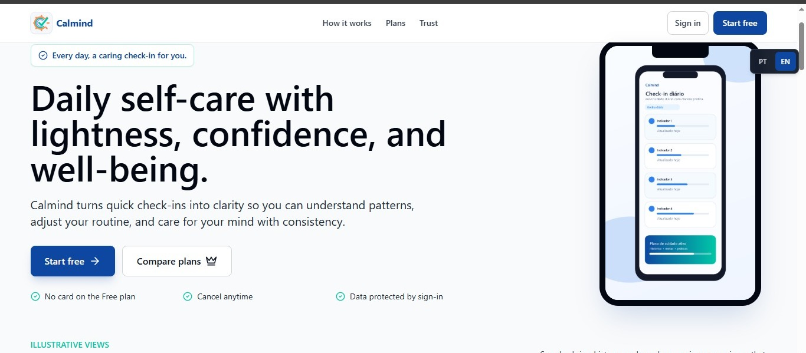

English
Many people want to understand their emotional patterns but do not maintain a consistent journaling habit. Calmind simplifies the process with fast daily check-ins focused on mood, stress, sleep and energy.
Bilingual mental wellness app
Calmind is a bilingual mental wellness app that helps users build daily self-awareness through quick check-ins, visual history and gentle progress tracking.
O Calmind é um aplicativo bilíngue de bem-estar mental que ajuda usuários a desenvolver autoconsciência diária por meio de check-ins rápidos, histórico visual e acompanhamento de progresso.

Replace assets/screenshot.png with your app image.
Project overview
Many people want to understand their emotional patterns but do not maintain a consistent journaling habit. Calmind simplifies the process with fast daily check-ins focused on mood, stress, sleep and energy.
Muitas pessoas querem entender melhor seus padrões emocionais, mas não conseguem manter uma rotina de diário. O Calmind simplifica esse processo com check-ins diários rápidos sobre humor, estresse, sono e energia.
Help users create a practical self-care routine through simple data, visual feedback and a calm, accessible interface.
Main features
Track mood, stress, energy and sleep in less than a minute.
Review patterns over time with a clean and calm dashboard.
Designed to support Portuguese and English without duplicating pages.
Prepared for future AI-powered insights, recommendations and summaries.
Technology
A bilingual project designed to make mental wellness tracking simple, visual and accessible.